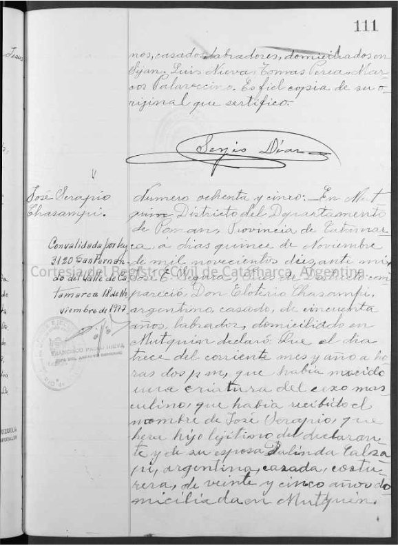
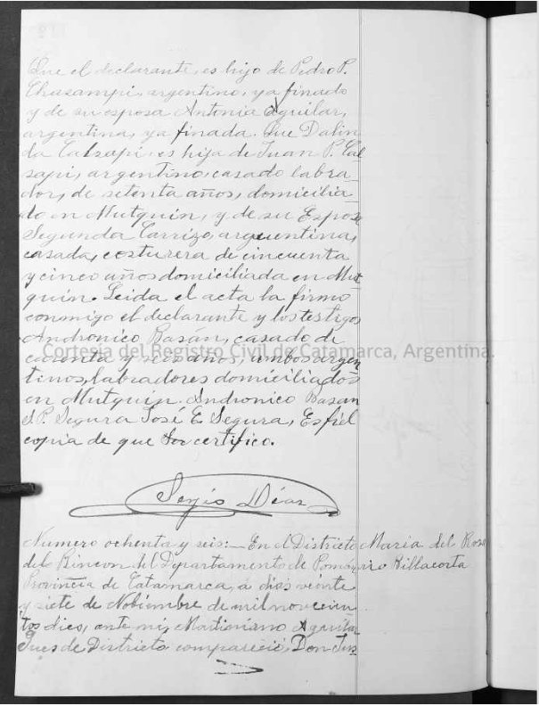

Acta de nacimiento
Registro Civil de Mutquín, departamento Pomán. Acta N.º 85, folios 111–112. Copia certificada, convalidada por la ley 3120.


Al margen: José Serapio Chasampi.
Número ochenta y cinco. En Mutquín, Distrito del Departamento de Pomán, Provincia de Catamarca, a días quince de noviembre de mil novecientos diez, ante mí, José C. Segura, Jefe del Registro Civil, compareció don Eleuterio Chasampi, argentino, casado, de cincuenta años, labrador, domiciliado en Mutquín, y declaró que el día trece del corriente mes y año, a horas dos p. m., había nacido una criatura del sexo masculino que había recibido el nombre de José Serapio, que tiene por hijo legítimo del declarante y de su esposa Dalinda Calsapi, argentina, casada, costurera, de veinticinco años, domiciliada en Mutquín.
Que el declarante es hijo de Pedro P. Chasampi, argentino, ya finado, y de su esposa Antonia Aguilar, argentina, ya finada. Que Dalinda Calsapi es hija de Juan P. Calsapi, argentino, casado, labrador, de setenta (?) años, domiciliado en Mutquín, y de su esposa Segunda Carrizo, argentina, casada, costurera, de cincuenta y cinco años, domiciliada en Mutquín.
Leída el acta, la firmó conmigo el declarante y los testigos Andrónico Basán, casado, de cuarenta y seis (?) años, y P. Segura (?), ambos argentinos, labradores, domiciliados en Mutquín. Andrónico Basán. P. Segura. José C. Segura. Es fiel copia, de que certifico.
Qué aporta: la fecha y la hora exactas del nacimiento, el nombre José Serapio y los cuatro abuelos con nombre y apellido. Es el documento más cercano a su nacimiento.